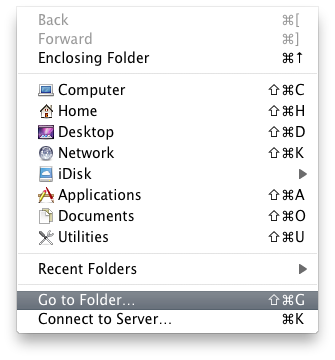

I updated my Mac with OS X 10.6 last night and the process went very smoothly without any problems. Apple does a good job with OS upgrades and installs, and they almost always go very smoothly. Most users can just pop in the disk, click the button, restart and go.
In my case, I use my Mac for web development in PHP so I had a couple of extra tasks to perform.
I prefer to use the internal Apache 2 web server provided by Apple – mostly because it can be enabled and disabled with a click on a System Preference panel and the built in system log browser (Console.app) reports errors in Apache and PHP. Handy.
In the past I used pre-built and packaged PHP module from Mark Liyanage – his package is the defacto standard for PHP development on a Mac, it’s linked from the PHP.net site directly. Mark’s packages always work very well and have anything and everything you could want in a PHP binary. His packages are intended to work with the built in apache web server.
But Mark is only one man, and he can’t be expected to crank out a PHP package the same day a new operating system is released. Man’s got to eat.
Apple has bundled PHP (along with Ruby, Java, Python, and other developer tools) with Mac OS X from the beginning. However Apple’s versions of PHP are not always the most current, or may be missing features. Fore example, in OS X 10.5 Apple didn’t include PDO drivers for MySQL – which is a weird thing to leave out – but there you go. Thus most developers either compile their own versions of PHP (and ruby, and python, etc) or rely on a prepackaged binary.
However this time around, Apple’s included version of PHP is up to date and full featured (enough to be useful).
PHP 5.3 is included in Mac OS X 10.6 by default and this time they didn’t forget the PDO drivers for MySQL. Whee! Here is the configure command from the built in PHP on my system:
'/var/tmp/apache_mod_php/apache_mod_php-53~1/php/configure'
'--prefix=/usr'
'--mandir=/usr/share/man'
'--infodir=/usr/share/info'
'--disable-dependency-tracking'
'--sysconfdir=/private/etc'
'--with-apxs2=/usr/sbin/apxs'
'--enable-cli'
'--with-config-file-path=/etc'
'--with-libxml-dir=/usr'
'--with-openssl=/usr'
'--with-kerberos=/usr'
'--with-zlib=/usr'
'--enable-bcmath'
'--with-bz2=/usr'
'--enable-calendar'
'--with-curl=/usr'
'--enable-exif'
'--enable-ftp'
'--with-gd'
'--with-jpeg-dir=/BinaryCache/apache_mod_php/apache_mod_php-53~1/Root/usr/local'
'--with-png-dir=/BinaryCache/apache_mod_php/apache_mod_php-53~1/Root/usr/local'
'--enable-gd-native-ttf'
'--with-ldap=/usr'
'--with-ldap-sasl=/usr'
'--enable-mbstring'
'--enable-mbregex'
'--with-mysql=mysqlnd'
'--with-mysqli=mysqlnd'
'--with-pdo-mysql=mysqlnd'
'--with-mysql-sock=/var/mysql/mysql.sock'
'--with-iodbc=/usr'
'--enable-shmop'
'--with-snmp=/usr'
'--enable-soap'
'--enable-sockets'
'--enable-sysvmsg'
'--enable-sysvsem'
'--enable-sysvshm'
'--with-xmlrpc'
'--with-iconv-dir=/usr'
'--with-xsl=/usr'
'--with-pcre-regex=/usr'
Look at all those goodies. This has everything I need for my current development needs, so I didn’t bother with building my own PHP.
Before I began the upgrade process I made a copy of my apache configuration files. By default, apache on OS X creates a configuration file for each user account on the computer. These configuration files can be found in /etc/apache2/users/ and are named with your short user name, followed by “.conf” e.g. “username.conf”
I keep all of my apache development configurations in my user configuration file, so I just made a copy of that file and stashed it on my desktop.
While I’m comfortable mucking about in the command line, I’m a visual person and I prefer to see what I’m doing. Mac OS X typically hides the unix system files in the Finder – this prevents horrible accidents – but you can still use the Finder to dig around in the hidden file system.
In the Finder (i.e. click the desktop) select the “Go” menu at the top of the screen, look for the “Go to folder…” option.

This will bring up the following screen, where you can type the file path you want. You can even tab-complete path names.

Now you can browse all those sneaky hidden files, right-click them and edit them in TextMate

From here I could just drag the httpd.conf file to my desktop, and then dig into the users directory find my configuration file, and drag that to the desktop.
Next I made a back up of my MySQL databases by opening Terminal and typing:
mysqldump -u root -ppassword --all-databases > mysql_backup.sql
Naturally you should use your own MySQL root password and not “password”. Naturally. This backup includes user tables as well as your databases, allowing you to reimport the whole kielbasa.
I ran a manual TimeMachine backup one more time to make sure I got everything backed up and then I ran the OS X 10.6 installer. Point. Click. Wait. Restart. Restart. Done. Easy.
After the update was done, I downloaded a new 64 bit intel installer for MySQL 5.0 here: http://dev.mysql.com/downloads/mysql/5.0.html#macosx-dmg – the site indicates OS X 10.5 but it works fine in 10.6
I reinstalled MySQL, the StartupItem, and the System Preference panel. From the command line I ran the following to reimport all of my data and users:
mysql --user=root --password=password < mysql_backup.sql
The 10.6 installer honored my existing apache configuration files, so I didn’t actually have to replace those. But if you have never enabled PHP, simply go to /etc/apache2/ and edit httpd.conf in TextMate (TextMate will ask for your administrator password to save the file). Look for the line which reads:
#LoadModule php5_module libexec/apache2/libphp5.so
Remove the pound sign (#) and save the file.
The default PHP installation on Mac OS X does not ship with a php.ini file. You’ll need to create one in order to configure PHP to find MySQL.
Go to /etc using the “Go” menu as indicated above. You should see a file entitled php.ini.default. Open this file in TextMate and save as “php.ini”
Set the server time zone by searching for “date.timezone” and setting the appropriate time zone ID from the lists here: http://us2.php.net/manual/en/timezones.php
I’m on the west coast, so I use date.timezone = America/Los_Angeles
Note that there are no quotes around the time zone ID.
Next, you’ll need to point PHP to the mysql.sock file. The default values are incorrect. Search for “mysql.sock” and change each configuration to point to /tmp/mysql.sock – you should find three instances to change.
pdo_mysql.default_socket=/tmp/mysql.sock
mysql.default_socket = /tmp/mysql.sock
mysqli.default_socket = /tmp/mysql.sock
(In previous versions, Mac OS X kept the mysql.sock file at /var/mysql/mysql.sock – the new location is more standard)
If you are a seasoned PHP developer you may wish to make other configuration changes at this time. If not, leave the rest alone.
Save and close the file.
All that is left to do now is to open System Preferences, launch the MySQL system preference and start the server. Show All, select “Sharing” and check the box next to “Web Sharing” from the list of options.
To verify everything works – create a text file in your Sites directory called php_info.php and include the following:
<?php phpinfo() ?>
Load this file up in your browser at http://localhost/~username/php_info.php (replacing ‘username’ with your user name) and you should see a nicely formatted list of all your PHP configurations.
Enjoy.
UPDATE: Rob Allen has some instructions up which include configuring Xdebug – very handy: http://akrabat.com/2009/10/05/setting-up-php-mysql-on-os-x-10-6-snow-leopard/


{kind=link}
{kind=link}